Camshaft Adjuster With Camshaft Drive Timing Chain, Installing
Camshaft Adjuster with Camshaft Drive Timing Chain, Installing
The timing chain for the intermediate driveshaft and sealing flange are installed.
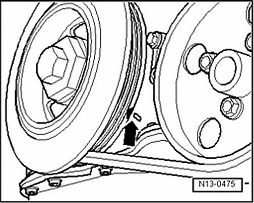
- Adjust crankshaft at securing bolt of vibration damper in direction of engine rotation to TDC cyl. 1 marking - arrow - .
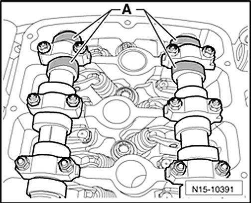
- Cams - A - of cylinder 1 must face each other.

- Insert the camshaft bar T10068 A into both shaft grooves. If necessary, slightly turn the camshaft back and forth using an open-end wrench.
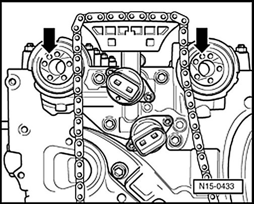
Note: Both camshaft adjusters (identification: "24E" on intake side and "32A" on exhaust side) can only bolted in one position on the camshaft mountings - arrows - by an alignment pin.
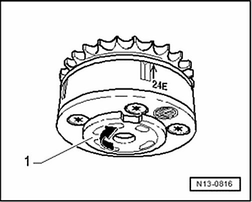
- Now turn sensor wheel - 1 - on intake camshaft adjuster clockwise - in direction of arrow - until it stops and hold the adjuster in this position.
Note: If the intake camshaft adjuster is attached to the camshaft, the adjuster must be rotated left accordingly with the chain sprocket and then the camshaft roller chain must be routed.
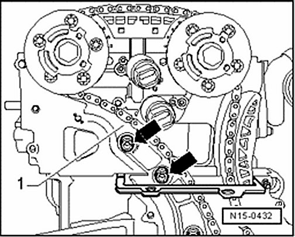
- Ensure the camshaft roller chain rests against the guide rail - 1 - tautly and does not hang through.
Adjuster must be able to be inserted easily on intake camshaft with camshaft roller chain installed tautly and be tightened hand-tight.
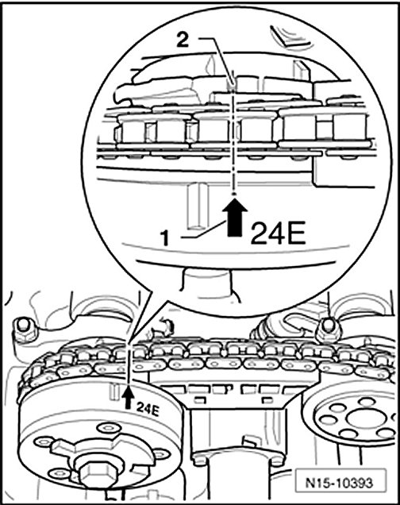
- The "arrow" - 1 - on the camshaft adjuster for the intake camshaft must align with the left notch - 2 - on the control housing.
- Starting with the toothed that has the "24E" marking, count exactly 16 rollers to the right on the timing chain. Mark this roller with a color marker.
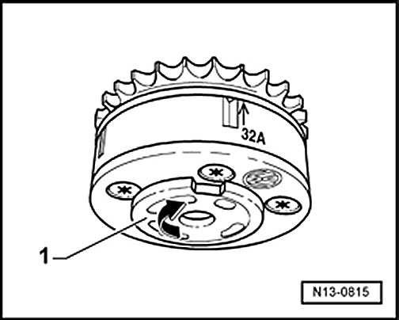
- Turn the sensor wheel - 1 - on the exhaust camshaft adjuster to the right - arrow - as far as the stop and hold the adjuster in this position.
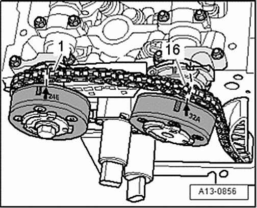
- Insert the exhaust camshaft adjuster in the camshaft roller chain with the tooth on the "32A" marking so the 16 rollers counted previously lie between the "24E" and "32A" markings and the markings align.
- Exhaust camshaft adjuster must be able to be inserted easily on exhaust camshaft and be tightened hand-tight.
- Check the position of both camshaft adjusters one more time for correct adjustment.
- Remove camshaft bar T10068 A .
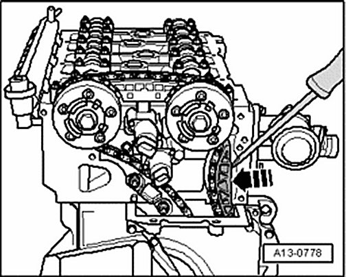
Note: When turning the crankshaft, the tensioning rail must be pressed by hand against the camshaft roller chain at the chain tensioner, so that the camshaft roller chain does not jump over!
- Turn over crankshaft twice in direction of engine rotation and check valve timing.
- If the markings match:
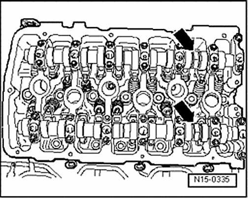
- Hold the respective fastening camshaft tightly with an open-end wrench 32 mm - arrow - .
Note: Camshaft bar T10068 A must not be inserted during this process.
- Tighten the new mounting bolts for the intake and exhaust camshaft adjuster to 60 Nm + 90 degree ( 1 / 4 turn).
If sealing rings in cover piece are to be replaced:
- Clean sealing surface on cover piece as well as on cylinder head.
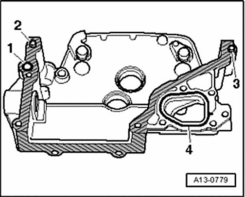
- Lubricate oil channel seal O-ring - 1 - and insert in cover.
- Make sure the fitting sleeves - 2 - and - 3 - are inserted.
- Insert the sealing ring - 4 - in the cover.
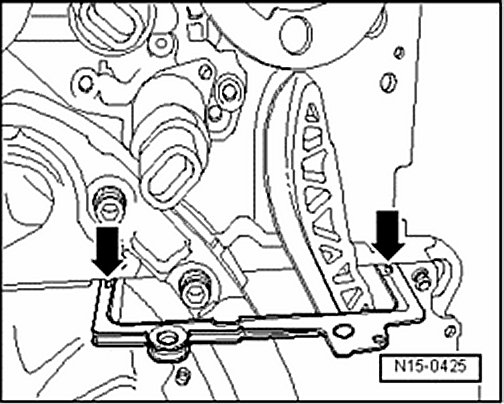
- Clean old sealing compound from the 3 mm holes in the cylinder head gasket - arrows - .
- Fill the 3 mm holes in the cylinder head gasket with sealant D 176 501 A1 . Coat the sealing surfaces on the cover with sealant D 176 501 A1 and install the cover immediately.
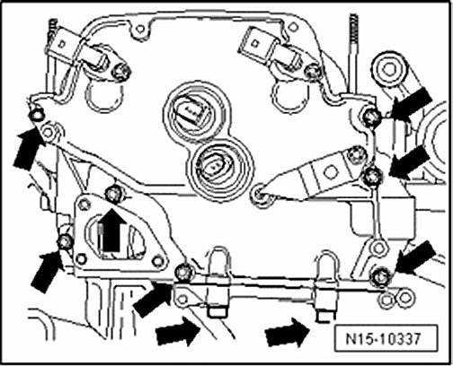
- First install all mounting bolts - arrows - and tighten lightly.
- Then tighten bolts M8 to 23 Nm, and tighten bolts M6 to 8 Nm.
- Install the camshaft roller chain tensioner and tighten it to 40 Nm.
- Turn over crankshaft twice in direction of engine rotation and check valve timing again.
- Install cylinder head cover and intake manifold.